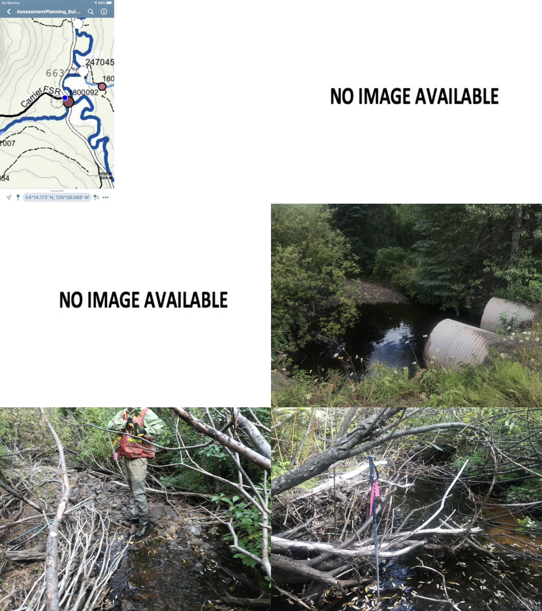
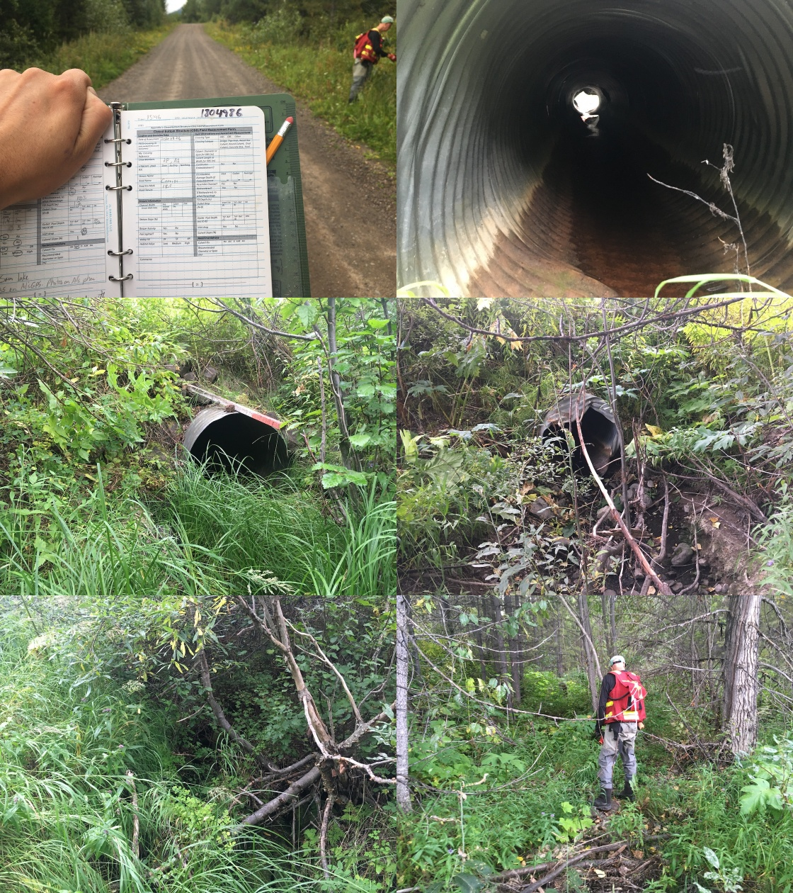

Appendix - 197640 - Tributary to Buck Creek
Site Location
PSCIS crossing 197640 is located on a tributary to Buck Creek on Buck Flats Road approximately 18km south of Houston and immediately south of the Carrier FSR turn-off. The crossing consisted of two culverts (moti_chris_culvert_id: 1756173 and 1756168) located approximately 70m upstream from the confluence with the Bulkley River. Buck Flats Road is the responsibility of the B.C. Ministry of Transportation and Infrastructure (MoTI).
Background
At crossing 197640, tributary to Buck Creek is a second order stream, has an upstream watershed area of approximately 23.9km2 that contains an estimated 204ha of wetland. The elevation of the watershed ranges from a maximum of 1460m to 820m at the crossing. Upstream of Buck Flats Road, rainbow trout have been previously recorded as present while downstream, chinook, coho and pink salmon are known to spawn in Buck Creek (MoE 2020a; Wilson and Rabnett 2007; NCFDC 1998). Pink salmon have been noted as spawning in the first reach of Buck Creek, with coho spawners noted to Reach 3, and chinook spawners to Reach 5 where the subject tributary enters the mainstem (NCFDC 1998). DFO (1991) reports that Buck Creek supports a small chinook population ranging from 12-100 spawners.
Three water temperature sensors have been deployed on the Buck Creek mainstem since 2016 (Westcott 2020). The closest water sensor to the subject stream is near the 9km mark of Buck Flats Road. The sensor has been gathering water temperature data at 1hour intervals since 2017 with data available through the Skeena Salmon Data Centre here (DFO/FLNRO 2019a).
Upstream of crossing 197640 on tributary to Buck Creek, multiple tributaries containing contain numerous modelled road stream crossings enter the mainstem, however, these tributaries are not expected to contain much valuable habitat due to the small size and low elevation of their contributing watersheds.
PSCIS stream crossing 197640 was ranked as a high priority for follow up following 2020 Phase 1 - fish passage assessments that targeted all major streams in the Buck Creek watershed. Crossing 197640 was located on the stream with the highest value habitat potentially blocked to anadromous species by a road-stream crossing structure in the watershed. Therefore, a habitat confirmation was conducted in 2020 with results in this memo.
Following the 2020 assessment, planning began to replace crossing 197640 with preliminary designs commissioned from the Canadian Wildlife Federation in collaboration with the MoTI. Crossing 197640 was revisited in the summer of 2023 to conduct baseline fish sampling but at the time of the survey the stream adjacent to the crossing was primarily dry so sampling was not conducted.
A map of the watershed is provided in map attachment 093L.109.
Stream Characteristics at Crossing
At the time of the 2020 survey, both culverts were un-embedded, non-backwatered and ranked as a barrier to upstream fish passage according to the provincial protocol (MoE 2011). The pipes were 1.5m in diameter with a length of 12m, a culvert slope of 1.5%, a stream width ratio of 3.4 and an outlet drop of 0.4m (Table 5.46). Water temperature was 10\(^\circ\)C, pH was 7.6 and conductivity was 226uS/cm.
As previously noted, during the 2023 reassessment the crossing was primarily dry with only a very small outlet pool (Figure 5.51). Both culverts were un-embedded, non-backwatered and had 0.6m outlet drops. Complete reassessment data from the 2023 fish passage assessment will be submitted to the PSCIS database and is available here.
Stream Characteristics Downstream
The stream was surveyed downstream from the culvert for 70m to the confluence with Buck Creek (Figures 5.52 - 5.53). Total cover amount was rated as moderate with undercut banks dominant. Cover was also present as small woody debris, large woody debris, and overhanging vegetation (Table 5.48). The average channel width was 4.6m, the average wetted width was 2.5m and the average gradient was 3%. The dominant substrate was gravels with cobbles subdominant. A fish (130mm) was observed in the culvert outlet pool and a substance suspected to be didymo was noted on the substrate. The habitat was rated as moderate value as it was considered an important migration corridor with habitat of moderate rearing potential for fry and juvenile salmonids.
Stream Characteristics Upstream
The stream was surveyed immediately upstream from 197640 for approximately 535m (Figures 5.54 - 5.55). Within the area surveyed, total cover amount was rated as moderate with undercut banks dominant. Cover was also present as small woody debris, large woody debris, boulders, deep pools, and overhanging vegetation (Table 5.48). The average channel width was 4.4m, the average wetted width was 2.2m and the average gradient was 2.5%. The dominant substrate was cobbles with boulders subdominant. Rare pockets of gravel suitable for spawning resident, fluvial and anadromous salmonids were noted. The stream appeared to be aggraded with side bars common. One salmonid (110mm - unidentified species) was observed just upstream of Buck Flats Road. The habitat was rated as r my_priority_info(loc = ‘us’) %>% pull(hab_value)` value for fry and juvenile salmonid rearing.
Approximately 4km upstream on an east-forking tributary is PSCIS crossing 197647, located on Carrier FSR (Table 5.47). This culvert was also assessed during the 2020 survey but the stream was dry and did not provide any viable fish habitat, although there are numerous fish sample sites, conducted in the early 2000’s, located just downstream (MoE 2020c).
Table 5.49 presents preliminary fish passage modelling data for crossing 197640 with spawning and rearing habitat estimated for chinook, coho, sockeye and steelhead. Modelled estimates of the total length of salmon or steelhead habitat upstream of the crossing before potential barriers are 2.6km of potential spawning habitat and 5.2km of potential rearing habitat.
Structure Remediation and Cost Estimate
Replacement of PSCIS crossing 197640 with a bridge (10m span) is recommended. The cost of the work is estimated at $1,000,000 for a cost benefit of 4.2 linear m/$1000 and 18.5m2/$1000.
As of March 2024, replacement of PSCIS crossing 197640 is currently in the planning process, lead by the Ministry of Transportation and Infrastructure.
Conclusion
A conservative estimate of mainstem habitat upstream of crossing 197640 on Buck Flats Road is 4.2km to the top end of a 71ha wetland where rainbow trout have been recorded. Habitat in the areas surveyed upstream of the culvert were rated as moderate value for salmonid rearing with areas of wetland habitat likely suitable for rainbow trout, coho and steelhead rearing. Buck Flats Road is the responsibility of the Ministry of Transportation and Infrastructure adn the crossing was ranked as a high priority for proceeding to design for replacement.
Following the 2020 habitat confirmation assessment and the initial release of this report, planning began to replace crossing 197640 with preliminary designs commissioned by the Canadian Wildlife Federation in collaboration with the MoTI. Although baseline fish sampling could not be completed in 2023 due to low water conditions, the crossing was still considered a high priority for replacement due to relatively lower costs of replacement (when compared to paved major roads), significant amounts of potential habitat upstream, its proximity to the high value Buck Creek and because of the severity of migration barrier presented by the large culvert outlet drops.
| Location and Stream Data |
|
Crossing Characteristics | – |
|---|---|---|---|
| Date | 2020-09-26 | Crossing Sub Type | Round Culvert |
| PSCIS ID | 197640 | Diameter (m) | 1.5 |
| External ID | – | Length (m) | 12 |
| Crew | AI, KP | Embedded | No |
| UTM Zone | 9 | Depth Embedded (m) | – |
| Easting | 654312 | Resemble Channel | No |
| Northing | 6012383 | Backwatered | No |
| Stream | Tributary to Buck Creek | Percent Backwatered | – |
| Road | Buck Flats Road | Fill Depth (m) | 1 |
| Road Tenure | MoTi local | Outlet Drop (m) | 0.4 |
| Channel Width (m) | 5.1 | Outlet Pool Depth (m) | 1.2 |
| Stream Slope (%) | 3 | Inlet Drop | No |
| Beaver Activity | No | Slope (%) | 1.5 |
| Habitat Value | High | Valley Fill | Deep Fill |
| Final score | 31 | Barrier Result | Barrier |
| Fix type | Replace with New Open Bottom Structure | Fix Span / Diameter | 10 |
| Photos: From top left clockwise: Road/Site Card, Barrel, Outlet, Downstream, Upstream, Inlet. | |||
| Comments: Large tributary on section of tributary connected to salmon bearing Buck Creek. Fish rising in outlet pool (estimated 130mm). Some cattle access points downstream. |
| Location and Stream Data |
|
Crossing Characteristics | – |
|---|---|---|---|
| Date | 2020-08-26 | Crossing Sub Type | Round Culvert |
| PSCIS ID | 197647 | Diameter (m) | 1 |
| External ID | 1804986 | Length (m) | 16 |
| Crew | KP, AI | Embedded | No |
| UTM Zone | 9 | Depth Embedded (m) | – |
| Easting | 651263.5 | Resemble Channel | No |
| Northing | 6012508 | Backwatered | No |
| Stream | Tributary to Buck Creek | Percent Backwatered | – |
| Road | Carrier FSR | Fill Depth (m) | 1.8 |
| Road Tenure | FLNR Nadina 9772 | Outlet Drop (m) | 0.3 |
| Channel Width (m) | 1.5 | Outlet Pool Depth (m) | 0 |
| Stream Slope (%) | 2 | Inlet Drop | No |
| Beaver Activity | No | Slope (%) | 1.5 |
| Habitat Value | Low | Valley Fill | Deep Fill |
| Final score | 34 | Barrier Result | Barrier |
| Fix type | Replace Structure with Streambed Simulation CBS | Fix Span / Diameter | 3 |
| Photos: From top left clockwise: Road/Site Card, Barrel, Outlet, Downstream, Upstream, Inlet. | |||
| Comments: Suspect no fish. Multiple fish survey sites located downstream. Dry at time of survey. |
Figure 5.51: Photos of PSCIS crossing 197640 taken in September 2023. From top left clockwise: Road/Site Card, Barrel, Outlet, Downstream, Upstream, Inlet.
| Site | Location | Length Surveyed (m) | Channel Width (m) | Wetted Width (m) | Pool Depth (m) | Gradient (%) | Total Cover | Habitat Value |
|---|---|---|---|---|---|---|---|---|
| 197640 | Downstream | 70 | 4.6 | 2.5 | – | 3 | moderate | moderate |
| 197640 | Upstream | 535 | 4.4 | 2.2 | 0.3 | 2.5 | moderate | moderate |
| Habitat | Potential | Remediation Gain | Remediation Gain (%) |
|---|---|---|---|
| Salmon Network (km) | 19.7 | 8.3 | 42 |
| Salmon Lake Reservoir (ha) | 1.5 | 0.8 | 53 |
| Salmon Wetland (ha) | 201.4 | 182.3 | 91 |
| Steelhead Network (km) | 20.0 | 8.3 | 42 |
| Steelhead Lake Reservoir (ha) | 1.5 | 0.8 | 53 |
| Steelhead Wetland (ha) | 201.4 | 182.3 | 91 |
| CH Spawning (km) | 1.1 | 1.1 | 100 |
| CH Rearing (km) | 1.9 | 1.4 | 74 |
| CO Spawning (km) | 3.1 | 2.6 | 84 |
| CO Rearing (km) | 5.7 | 5.2 | 91 |
| CO Rearing (ha) | 108.0 | – | – |
| SK Spawning (km) | 0.0 | 0.0 | – |
| SK Rearing (km) | 0.0 | 0.0 | – |
| SK Rearing (ha) | – | – | – |
| ST Spawning (km) | 1.1 | 1.1 | 100 |
| ST Rearing (km) | 3.2 | 2.6 | 81 |
| All Spawning (km) | 3.1 | 2.6 | 84 |
| All Rearing (km) | 5.8 | 5.2 | 90 |
| All Spawning and Rearing (km) | 5.8 | 5.2 | 90 |
| * Model data is preliminary and subject to adjustments including incorporating area based estimates. | |||
| † Modelled rearing habitat estimates include linear lengths of centrelines within wetlands for coho and within lakes >100ha (multiplied by 1.5) for sockeye. | |||
| ‡ Remediation Gain is an estimate of the amount of habitat to be gained by providing access above the crossing. This assumes that all upstream habitat is currently unavailable and that all modelled unassessed crossings located upstream would prevent further passage. |

Figure 5.52: Habitat downstream of PSCIS crossing 197640.

Figure 5.53: Habitat downstream of crossing 197640 at the confluence with Buck Creek.

Figure 5.54: Habitat upstream of PSCIS crossing 197640.

Figure 5.55: Habitat upstream of PSCIS crossing 197640.